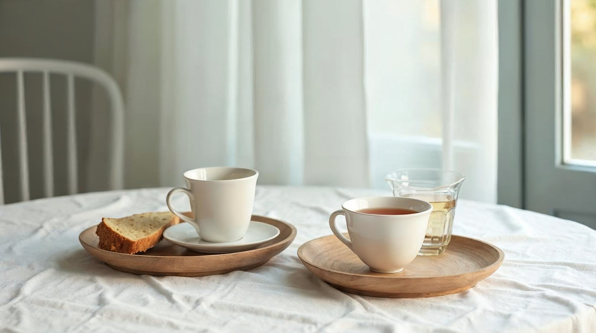
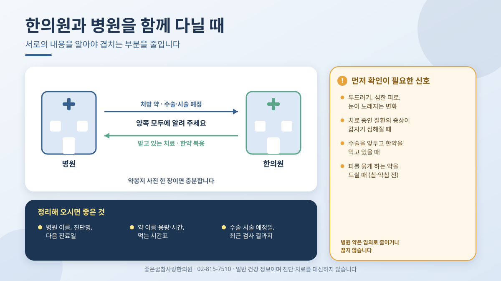

이종호 한의사 감수좋은꿈참사랑한의원 대표원장 (한의사 면허번호 19769)발행 2026-11-23 · 수정 2026-11-26
이 글의 차례
- 왜 서로 알려야 할까요
- 먼저 이렇게 여쭙니다
- 양쪽에 각각 알려 주세요
- 일상에서 먼저 해 볼 수 있는 것
- 예를 들면 이런 경우입니다
- 한의원에서 함께 살필 수 있는 경우
- 자주 하는 오해
- 스스로 점검해 보세요
- 이렇게 기록해 오시면 상담이 쉬워집니다
- 병원에 한의원 진료를 말할 때는 이렇게 해 보세요
- 약 먹는 시간표는 어떻게 만들면 좋을까요?
- 두 곳의 설명이 다르게 들릴 때는 어떻게 하나요?
- 어르신의 약을 가족이 챙길 때
- 수술이나 시술 날짜가 잡혔다면 이 순서로 알려 주세요
- 영양제와 건강식품도 목록에 넣어 주세요
- 왜 한약 복용을 병원에도 알려야 할까요?
- 같은 날 두 곳을 다녀야 한다면
- 병원 약이 바뀌었다면 이렇게 전해 주세요
- 두 곳의 진료를 한 수첩에 적어 보세요
- 왜 다음 병원 진료일까지 여쭐까요?
- 처음 함께 다니기 시작하는 분께
- 한의원 진료를 잠시 쉬게 될 때도 알려 주세요
- 이런 증상은 먼저 확인이 필요합니다
- 얼마나 지켜보고, 언제 확인하면 좋을까요
- 처음 오시면 이렇게 진행합니다
- 관련 글
한의원과 병원을 함께 다닐 때는 양쪽 모두에 지금 받는 치료와 복용 중인 약, 새로 시작하거나 바꾼 치료, 수술이나 시술 예정을 알려 주시는 것이 가장 중요합니다. 어느 한쪽 진료를 포기할 필요는 없지만, 서로의 내용을 알고 있어야 겹치거나 충돌하는 부분을 줄일 수 있습니다. 약봉지 사진 한 장이면 충분합니다.
왜 서로 알려야 할까요
- 병원 약과 한약을 함께 먹을 때 복용 시간과 겹치는 부분을 확인해야 합니다.
- 항응고제를 드시면 침이나 약침에서 멍이나 출혈이 생기기 쉬워 방법을 조정해야 할 수 있습니다.
- 수술이나 시술을 앞두고 있다면 한약 복용과 치료 일정을 미리 조정해야 할 수 있습니다.
- 한쪽에서 생긴 불편을 다른 쪽에 알리면 원인을 함께 가늠하기 쉬워집니다.
- 같은 검사를 두 곳에서 반복하지 않고 이미 확인된 내용을 이어서 쓸 수 있습니다.
먼저 이렇게 여쭙니다
- 병원에서 진단받은 병과 현재 치료 계획은 무엇인가요?
- 복용 중인 약의 이름과 시간은 어떻게 되나요?
- 최근 새로 시작하거나 바꾼 치료나 약이 있나요?
- 수술이나 시술 예정이 있나요?
- 병원 의사에게 한의원 진료를 받는다고 알리셨나요?

양쪽에 각각 알려 주세요
- 병원에 알릴 것: 한의원에서 받는 치료 종류(침, 추나, 약침 등), 한약을 먹고 있는지와 시작한 날짜
- 한의원에 알릴 것: 진단명, 복용 약 이름과 용량, 최근 검사 결과, 다음 병원 진료일
- 양쪽 모두에 알릴 것: 수술·시술·내시경·치과 치료 예정, 새로 생긴 불편, 약을 바꾼 날짜
진료실에서 말로 설명하기가 어렵다면 위 내용을 종이 한 장에 적어 양쪽에 똑같이 보여 주셔도 됩니다. 같은 메모를 두 곳에서 보면 서로 다른 이야기로 헷갈리는 일을 줄일 수 있습니다.
일상에서 먼저 해 볼 수 있는 것
- 병원 진료 때 한의원에서 받는 치료도 간단히 알리기
- 한의원 진료 때 병원 처방 내용을 약봉지 사진으로 보여 주기
- 새로운 약이나 치료를 시작할 때마다 양쪽에 알리기
- 병원 약과 한약 먹는 시간을 표로 정리해 두기
- 휴대폰 메모장에 '지금 먹는 약' 목록을 하나 만들어 두고 바뀔 때마다 고치기
예를 들면 이런 경우입니다
- 예를 들어 혈압약과 당뇨약을 드시는 어르신이 허리 때문에 침 치료를 받는다면, 두 약의 이름과 먹는 시간을 알려 주시면 그날의 혈압과 식사 상태를 함께 여쭙고 치료 자세와 범위를 정합니다.
- 예를 들어 다음 달 내시경이나 치과 발치를 앞두고 한약을 먹고 있다면, 병원에 한약 복용 사실을 알리고 한의원에도 검사 날짜를 알려 주시면 복용 일정을 미리 함께 조정할 수 있습니다.
- 예를 들어 정형외과에서 물리치료를 받으며 한의원 침 치료도 함께 받는 직장인이라면, 양쪽에서 받은 치료 날짜와 그 뒤 통증 변화를 한 장에 적어 두시면 어느 쪽에서든 흐름을 이해하기 쉽습니다.
한의원에서 함께 살필 수 있는 경우
- 병원 치료를 받는 중에 잠, 식욕, 피로가 함께 불편할 때 생활 전체를 함께 여쭙니다.
- 약을 먹은 뒤 불편이 느껴질 때 그 내용을 기록해 병원에 전달할 수 있도록 돕습니다.
- 병원 진단과 한의원 이야기가 달라 혼란스러울 때 무엇이 궁금한지 함께 정리합니다.
좋은꿈참사랑한의원에서는 진맥을 기본으로 병원 처방과 치료 계획을 함께 확인하고, 필요하다고 판단될 때 설진·복진을 더해 살핀 뒤 병원 치료와 겹치지 않는 범위에서 침이나 한약 상담 등을 정합니다. 한약을 먹게 되면 병원 약과 시간을 어떻게 띄울지도 함께 정합니다.
자주 하는 오해
- 한의원과 병원 중 한 곳만 골라야 한다고 여기는 분도 있지만, 서로의 내용을 알고 있으면 함께 다니며 이어 가는 분이 많습니다.
- 한약을 먹으면 병원 약을 줄여도 된다고 생각하기 쉬운데, 병원 약은 처방한 의사와 상의 없이 줄이거나 끊지 않습니다.
- 건강식품이나 영양제는 약이 아니니 말하지 않아도 된다고 여기기 쉽지만, 복용 시간을 정할 때 필요한 정보라 함께 알려 주세요.
스스로 점검해 보세요
- 지금 먹는 약의 이름을 모두 말할 수 있다
- 혈압약, 당뇨약, 피를 묽게 하는 약 중 하나를 먹고 있다
- 최근 한 달 안에 약이 바뀌거나 새로 생겼다
- 앞으로 수술, 시술, 내시경, 치과 치료 예정이 있다
- 병원 의사에게 한의원 진료나 한약 복용을 아직 말하지 않았다
- 영양제나 건강식품을 함께 먹고 있다
- 두 곳의 이야기가 달라 헷갈린 적이 있다
해당하는 항목은 양쪽 진료 때 각각 짧게 말씀해 주세요. 약 이름이 기억나지 않으면 약봉지나 처방전을 찍은 사진을 보여 주시는 것으로 충분합니다.
이렇게 기록해 오시면 상담이 쉬워집니다
- 병원 이름, 진단명, 다음 진료일
- 복용 약 이름, 용량, 시간
- 수술·시술 예정일
- 최근 검사 결과지
- 두 곳에서 치료받은 날짜와 그 뒤 달라진 점
- 병원 약이나 한약을 먹은 뒤 불편했던 때와 그 내용
병원에 한의원 진료를 말할 때는 이렇게 해 보세요
병원 진료실에서 한의원 이야기를 꺼내기 어색하다는 분이 많습니다. 길게 설명하지 않으셔도 됩니다. "요즘 허리 때문에 한의원에서 침을 맞고 있고, 지난주부터 한약을 하루 두 번 먹고 있어요" 정도면 충분합니다.
한약 이름을 모르셔도 괜찮습니다. 한약을 받은 날짜와 하루에 몇 번 드시는지만 알려도 병원에서 안내하는 데 필요한 정보가 됩니다. 병원에서 다른 질문을 하면 메모해 두었다가 한의원 진료 때 그대로 말씀해 주세요.
약 먹는 시간표는 어떻게 만들면 좋을까요?
종이 한 장에 아침, 점심, 저녁, 자기 전 네 칸을 그리고 병원 약부터 처방대로 적어 넣으세요. 병원 약의 시간은 그대로 두고, 한약을 어느 칸에 넣을지는 진료 때 함께 정해 적습니다.
예를 들어 아침 식후에 혈압약을 드신다면, 한약을 언제 드실지 진료 때 정한 뒤 그 시간을 표에 써 두는 식입니다. 표를 식탁 옆이나 냉장고에 붙여 두면 가족도 함께 확인할 수 있어 빠뜨리는 일이 줄어듭니다.
두 곳의 설명이 다르게 들릴 때는 어떻게 하나요?
병원은 검사 수치와 영상으로 병의 이름과 진행 정도를 살피고, 한의원은 맥과 몸 전체의 리듬, 생활 습관을 함께 봅니다. 그래서 같은 불편을 서로 다른 말로 설명하는 일이 생깁니다.
설명이 엇갈리게 들리면 각 진료실에서 "그러면 저는 집에서 무엇을 하면 되나요?"라고 물어보세요. 실제로 해야 할 일은 겹치는 경우가 많습니다. 진단과 병원 약은 병원 설명을 따르시고, 한의원에서는 그 위에서 무엇을 함께 살필지 이야기합니다.
어르신의 약을 가족이 챙길 때
어르신은 여러 과에 다니시며 약이 많은 경우가 흔합니다. 자녀분이 약봉지를 한자리에 모아 한 번에 사진을 찍고, 처방받은 날짜와 병원 이름을 옆에 적어 주시면 한눈에 보기 좋습니다.
여러 병원에서 받은 약끼리 같은 성분이 겹치는지는 약국이나 처방한 병원에서 확인해 주세요. 한의원에서는 그 목록을 보고 한약을 정할 때 함께 참고합니다.
수술이나 시술 날짜가 잡혔다면 이 순서로 알려 주세요
먼저 병원에 한약을 먹고 있다는 사실을 말씀하시고, 이어서 한의원에 수술이나 시술 날짜를 알려 주세요. 금식이나 약 조절에 관한 안내는 병원 지시를 따르시면 됩니다.
한약을 언제 멈추고 언제 다시 시작할지는 병원 안내에 맞춰 함께 정합니다. 수술을 마치고 다시 오실 때는 퇴원할 때 받은 안내문이나 처방받은 약을 가져오시면 그다음 진료를 이어 가기 쉽습니다.
영양제와 건강식품도 목록에 넣어 주세요
홍삼, 유산균, 오메가3, 종합비타민처럼 매일 챙기는 것들도 목록에 함께 적어 주세요. 제품 이름과 하루에 몇 알을 먹는지, 언제부터 먹었는지만 있으면 됩니다. 통째로 사진을 찍어 오셔도 괜찮습니다.
한약을 정할 때 비슷한 재료가 겹치는지, 먹는 시간을 어떻게 나눌지 살피는 데 쓰입니다. 병원에서도 같은 목록을 보여 주시면 약을 정할 때 참고가 됩니다.
왜 한약 복용을 병원에도 알려야 할까요?
병원에서는 검사 수치를 해석하거나 새 약을 정할 때, 지금 몸에 들어가는 것을 모두 알고 있어야 판단이 정확해집니다. 한약을 먹고 있다는 사실을 모르면 수치가 달라진 이유를 따로 찾느라 시간이 걸릴 수 있습니다.
그래서 한약을 시작한 날짜와 끝난 날짜를 휴대폰 메모에 남겨 두시기를 권합니다. 병원 진료 때 그 메모를 그대로 보여 주시면 됩니다.
같은 날 두 곳을 다녀야 한다면
검사 때문에 금식하고 병원에 다녀온 날은 공복인 채로 바로 침을 맞기보다, 식사를 하고 한숨 돌린 뒤 오시는 것이 편합니다. 병원에서 물리치료를 받은 날이라면 어떤 치료를 몇 시에 받았는지 알려 주세요.
이런 정보가 있으면 그날 몸에 무리가 가지 않도록 치료 자세와 범위를 정할 수 있습니다. 순서가 고민되면 방문 전에 전화로 먼저 물어보셔도 됩니다.
병원 약이 바뀌었다면 이렇게 전해 주세요
약이 바뀌면 바뀐 날짜, 새로 생기거나 빠진 약 이름, 병원에서 들은 이유를 한 줄로 적어 두세요. 새 약봉지를 한 장 더 찍어 오시면 예전 사진과 나란히 놓고 비교할 수 있습니다.
용량만 바뀐 경우도 꼭 알려 주세요. 같은 약이라도 양이 달라지면 한약 복용 시간이나 침 치료를 정할 때 다시 살펴야 할 수 있습니다.
두 곳의 진료를 한 수첩에 적어 보세요
작은 수첩 하나에 병원과 한의원 진료를 날짜순으로 함께 적어 보세요. "3일 정형외과 물리치료, 5일 한의원 침, 7일 혈압약 용량 변경"처럼 한 줄이면 충분합니다.
어느 진료실에 가든 이 수첩 한 권을 펼치면 그동안의 흐름이 한눈에 보입니다. 휴대폰 메모나 달력 앱을 써도 좋습니다. 중요한 것은 두 곳의 기록이 한자리에 모여 있는 것입니다.
왜 다음 병원 진료일까지 여쭐까요?
다음 병원 진료일을 알면 그 전에 한의원에서 무엇을 살펴 두고, 그 뒤에는 무엇을 이어서 볼지 계획을 세우기 쉽습니다. 병원에서 검사를 다시 받기로 했다면 그 결과를 함께 보며 다음 진료를 이어 갈 수 있습니다.
병원 진료 날 한의원에서 받은 치료와 한약 이야기를 한 번 더 전해 주시면, 두 곳의 이야기가 같은 흐름 위에서 이어집니다.
처음 함께 다니기 시작하는 분께
이미 병원 치료를 받고 있다가 한의원을 처음 찾으셨다면, 첫 진료 때 지금까지의 병원 치료를 짧게 정리해 주세요. 언제 어떤 진단을 받았고, 지금 무엇을 드시며, 다음 진료가 언제인지 세 가지면 됩니다.
정리가 어렵다면 진료실에서 질문에 하나씩 답해 주셔도 괜찮습니다.
한의원 진료를 잠시 쉬게 될 때도 알려 주세요
병원 치료 일정 때문에 한동안 한의원에 오기 어려워졌다면 그 사정도 알려 주세요. 그사이 집에서 무엇을 기록해 두면 좋을지 미리 정해 두면, 다시 오셨을 때 끊긴 곳부터 이어 갈 수 있습니다.
한약을 다 드시고 마친 뒤라도 병원 진료 때는 언제부터 언제까지 드셨는지 한 번 알려 주세요.
이런 증상은 먼저 확인이 필요합니다
- 두 곳의 치료를 함께 받으면서 새로운 불편(두드러기, 심한 피로, 눈이 노래짐)이 생긴 경우
- 병원 치료 중인 질환의 증상이 갑자기 심해진 경우
이런 신호가 있으면 한의원보다 가까운 병원이나 응급실을 먼저 찾으세요.
얼마나 지켜보고, 언제 확인하면 좋을까요
- 병원 약이 바뀐 뒤 한약을 함께 먹고 있다면, 첫 일주일 정도는 잠·소화·대변·피부의 변화를 하루 한 줄씩 적어 두세요.
- 가벼운 속 불편이 하루 이틀 있다가 가라앉으면 기록해 두었다가 다음 진료 때 양쪽에 말씀해 주세요.
- 같은 불편이 사흘 넘게 이어지면 한약은 잠시 멈추고, 다음 진료를 기다리지 말고 병원과 한의원(02-815-7510) 모두에 전화로 알려 주세요.
- 수술이나 시술 날짜가 잡히면 날짜가 정해진 그 주 안에 양쪽에 알려 일정을 미리 맞추세요.
처음 오시면 이렇게 진행합니다
첫 방문에는 접수 때 기본 정보를 적고, 복용 중인 약 목록과 다른 병원 검사 결과가 있으면 함께 내 주세요. 진료실에서는 먼저 맥을 짚고, 맥을 짚으면서 불편한 곳과 함께 병원 진단과 치료 계획, 다음 병원 진료일을 여쭙습니다.
이어서 신체 진찰을 하고, 필요하다고 판단될 때 설진·복진을 더한 뒤, 병원 치료와 겹치지 않는 범위에서 오늘 할 수 있는 방법과 그 이유를 먼저 설명드립니다.
관련 글
- 혈압약이나 당뇨약을 먹고 있는데 한약을 함께 먹어도 되는지 어떻게 확인하나요?
- 내시경·치과 치료·수술을 앞두고 한약을 먹고 있을 때는 어떻게 하나요?
- 한의원 가기 전에 복용 약 목록은 어떻게 정리하면 좋나요?

여쭙는 것
- 병원에서 진단받은 병과 현재 치료 계획은 무엇인가요?
- 복용 중인 약의 이름과 시간은 어떻게 되나요?
- 최근 새로 시작하거나 바꾼 치료나 약이 있나요?
생활에서 해 볼 것
- 병원 진료 때 한의원에서 받는 치료도 간단히 알리기
- 한의원 진료 때 병원 처방 내용을 약봉지 사진으로 보여 주기
- 새로운 약이나 치료를 시작할 때마다 양쪽에 알리기
한의원에서 함께 살필 것
- 병원 치료를 받는 중에 잠, 식욕, 피로가 함께 불편할 때 생활 전체를 함께 여쭙니다.
- 약을 먹은 뒤 불편이 느껴질 때 그 내용을 기록해 병원에 전달할 수 있도록 돕습니다.
- 병원 진단과 한의원 이야기가 달라 혼란스러울 때 무엇이 궁금한지 함께 정리합니다.
먼저 확인이 필요한 신호
- 두 곳의 치료를 함께 받으면서 새로운 불편(두드러기, 심한 피로, 눈이 노래짐)이…
- 병원 치료 중인 질환의 증상이 갑자기 심해진 경우
한눈에 보는 표
| 구분 | 핵심 |
|---|---|
| 여쭙는 것 | 병원에서 진단받은 병과 현재 치료 계획은 무엇인가요? 복용 중인 약의 이름과 시간은 어떻게 되나요? |
| 생활에서 해 볼 것 | 병원 진료 때 한의원에서 받는 치료도 간단히 알리기 한의원 진료 때 병원 처방 내용을 약봉지 사진으로 보여 주기 |
| 한의원에서 함께 살필 것 | 병원 치료를 받는 중에 잠, 식욕, 피로가 함께 불편할 때 생활 전체를 함께 여쭙니다. 약을 먹은 뒤 불편이 느껴질 때 그 내용을 기록해 병원에 전달할 수 있도록 돕습니다. |
| 먼저 확인이 필요한 신호 | 두 곳의 치료를 함께 받으면서 새로운 불편(두드러기, 심한 피로, 눈이 노래짐)이 생긴 경우 병원 치료 중인 질환의 증상이 갑자기 심해진 경우 |
자주 묻는 질문
병원에는 한의원 진료를 말하기 어려운데요.
알려 주시는 것이 안전합니다. 병원 의사가 안내를 위해 알아야 하는 정보입니다.
약 시간이 겹쳐도 되나요?
약마다 달라서 한약과 병원 약의 시간은 미리 확인해 정리하세요.
병원 진단과 한의원 설명이 달라서 혼란스러워요.
서로 보는 관점이 다를 수 있습니다. 궁금한 점은 각 진료실에서 직접 물어보세요.
같은 날 병원과 한의원을 모두 가도 되나요?
일정상 같은 날 가셔도 됩니다. 그날 병원에서 받은 주사나 시술이 있다면 한의원 진료 때 먼저 말씀해 주세요.
좋은꿈참사랑한의원은 재진 때 지난번 이야기부터 이어서 여쭙니다. 진료시간과 예약은 오시는 길에서 확인하세요.
어디서 상담받을 수 있나요?
좋은꿈참사랑한의원은 서울 동작구 만양로2길 2 신성빌딩 3층·5층(서울 동작구 상도동, 7호선 상도역 3번 출구 근처)에 있습니다. 한의사 3명(이종호 대표원장, 조영기 수석진료원장, 정원영 진료원장)이 진료합니다. 진료시간은 평일 09:30~20:00(점심 13:00~14:00), 토·일·공휴일 09:30~15:00이며, 방문 전 전화로 확인을 권합니다. 예약은 네이버 예약, 카카오톡 상담, 전화 02-815-7510로 받습니다.
이 글은 일반적인 건강 정보이며 개인의 진단이나 치료를 대신하지 않습니다. 증상이 있거나 복용 중인 약이 있다면 진료를 통해 확인하세요. 치료 효과는 개인마다 다를 수 있습니다.
작성 기준: 일반적으로 알려져 있는 건강 정보를 참고해 정리했습니다(대표원장 감수). 증상 기록은 1~2주 동안 하루 1회, 비슷한 시간에 적어 오시면 지난 상태와 비교하기 쉽습니다.